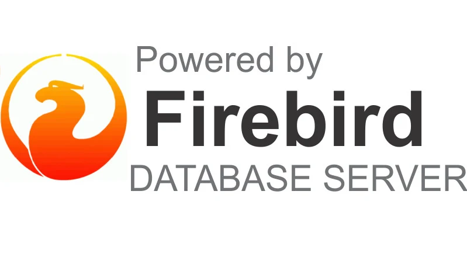

Firebird
¿Qué es Firebird?
Firebird es un sistema de gestión de bases de datos relacionales (RDBMS) de código abierto, potente, estable y multiplataforma. Deriva del código de InterBase 6.0, liberado por Borland en 2000, y es gratuito y sin costos de licencia. Se utiliza para crear y gestionar bases de datos eficientes para diversas aplicaciones, desde pequeñas hasta grandes, gracias a su robustez y escalabilidad.
- Código abierto y gratuito: No tiene costos de licencia, lo que lo hace una opción atractiva para el desarrollo.
- Multiplataforma: Funciona en Windows, Linux, macOS y otras plataformas Unix.
- Motor robusto: Herencia de la tecnología de InterBase, lo que le confiere madurez y estabilidad.
- Compatible con SQL: Utiliza el lenguaje estándar SQL para consultas y manipulación de datos.
- Escalable: Adecuado para proyectos de cualquier tamaño, desde aplicaciones pequeñas hasta grandes sistemas empresariales.
- Ligero y eficiente: Se caracteriza por su bajo consumo de recursos y sencilla configuración.
¿Para qué se utiliza?
Firebird es ideal para gestionar bases de datos en una amplia variedad de aplicaciones, como: sistemas de punto de venta, análisis de procesos industriales, aplicaciones empresariales y desarrollo de aplicaciones en general.
Ventajas de Firebird
- Excelente rendimiento: Ofrece alta velocidad y eficiencia en la gestión de datos.
- Estabilidad: Su tecnología madura garantiza un funcionamiento fiable.
- Bajo costo total de propiedad: Al ser gratuito, permite destinar recursos a otras áreas críticas como el hardware y la capacitación.
- Facilidad de uso: Su configuración es sencilla, lo que facilita su adopción.
Ejemplo de operaciones CRUD en Firebird
Crear (INSERT):
INSERT INTO GALERIA (NOMBRE_OBRA, AUTOR, ANIO, TIPO)
VALUES ('La noche estrellada', 'Vincent van Gogh', 1889, 'Pintura');
INSERT INTO GALERIA (NOMBRE_OBRA, AUTOR, ANIO, TIPO)
VALUES ('La persistencia de la memoria', 'Salvador Dalí', 1931, 'Pintura');
INSERT INTO GALERIA (NOMBRE_OBRA, AUTOR, ANIO, TIPO)
VALUES ('Fotografía sin título', 'Ansel Adams', 1942, 'Fotografía');
Leer (SELECT):
SELECT * FROM GALERIA;
SELECT NOMBRE_OBRA, ANIO
FROM GALERIA
WHERE AUTOR = 'Vincent van Gogh';
SELECT NOMBRE_OBRA, AUTOR
FROM GALERIA
WHERE TIPO = 'Fotografía';
Actualizar (UPDATE):
UPDATE GALERIA
SET TIPO = 'Obra maestra - Pintura'
WHERE NOMBRE_OBRA = 'La persistencia de la memoria';
Eliminar (DELETE):
DELETE FROM GALERIA
WHERE NOMBRE_OBRA = 'Fotografía sin título';